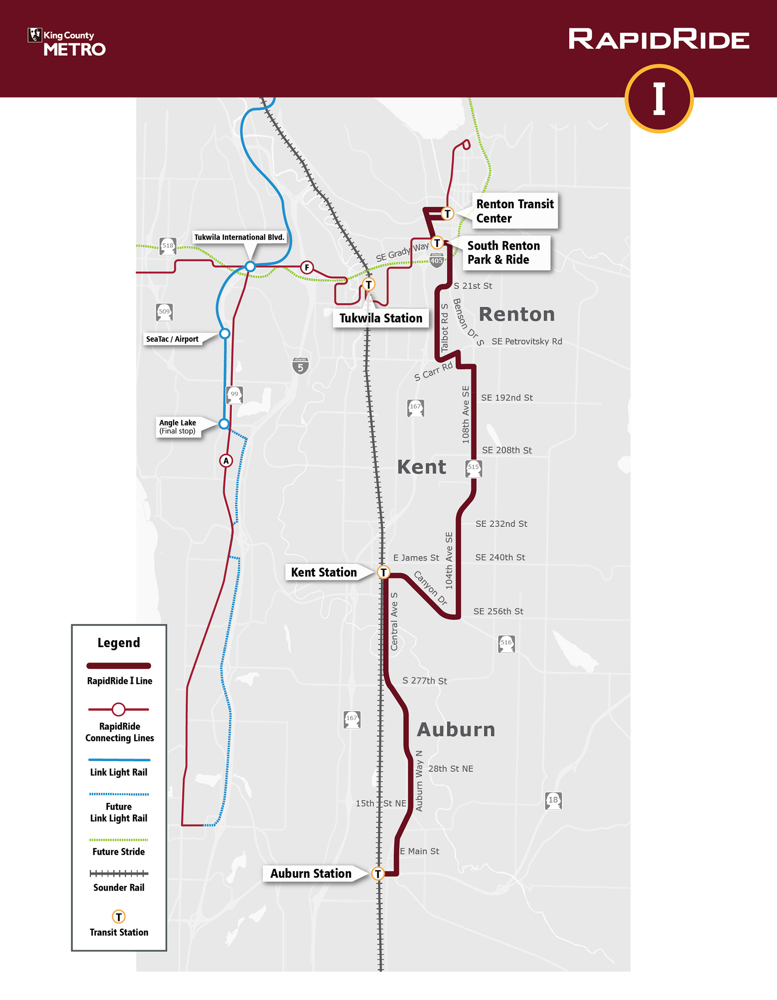
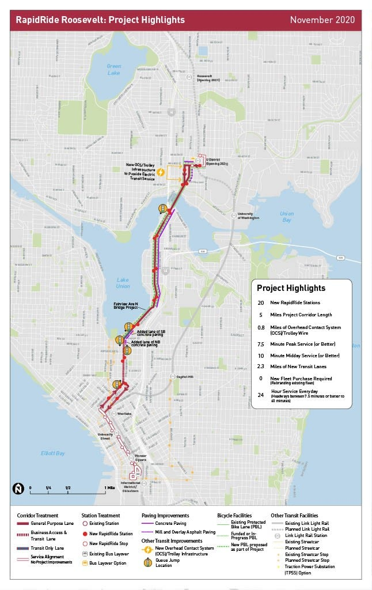
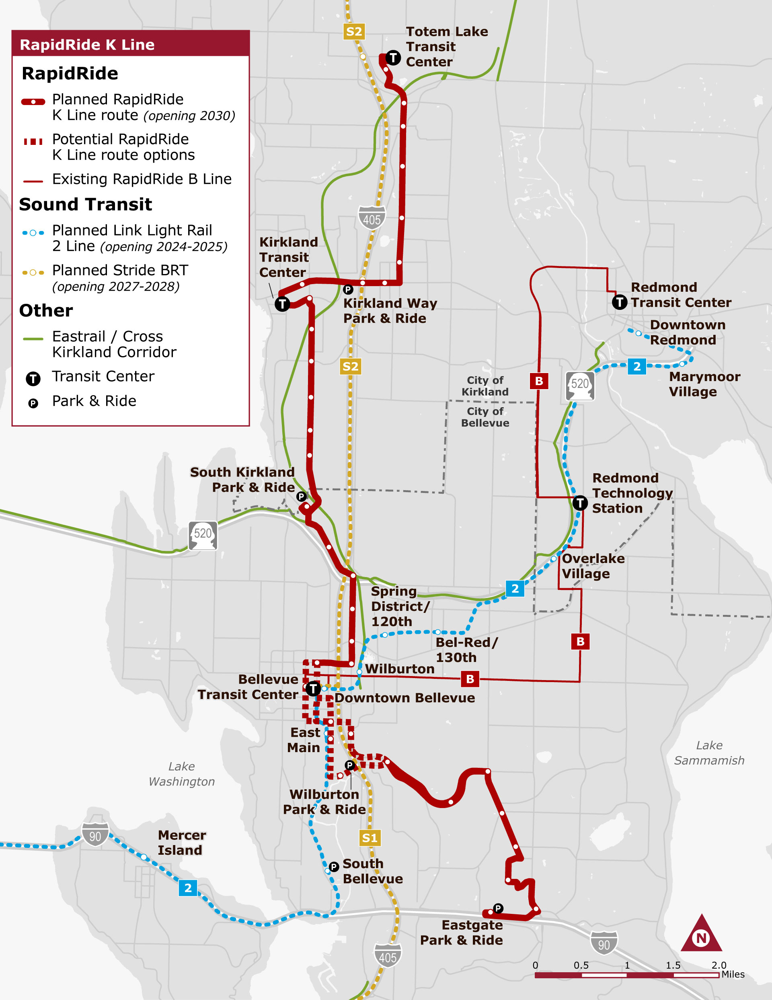
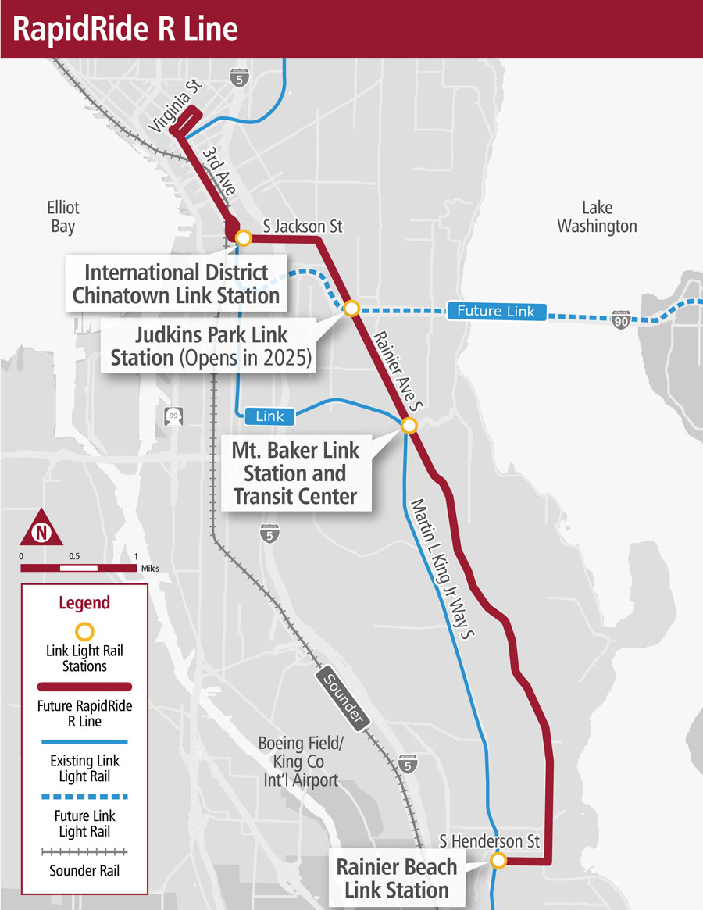

King County Metro has plans to expand the RapidRide network with new lines and extensions to existing lines. These planned services aim to further improve transit accessibility and reduce travel times for residents in the Seattle metropolitan area. Click to learn about the planned RapidRide lines
Planned for opening in 2027, the I Line will replace Route 160 to connect the Renton Transit Center to Auburn Station via Kent. Significant infrastructure improvements will be taking place, including 27 new transit signal priority lights, 12 bus lane widenings to increase bus speed, 64 new/enhanced pedestrian crossings, new bike lanes, and over 100 new ADA-accessible curb ramps. Construction began in fall 2025 with plans to launch in 2027.
Also planned for 2027, the J Line will replace Route 70 to connect Downtown Seattle with the the U District by way of Belltown, South Lake Union, and Eastlake. The project will implement 2 miles of bus priority lanes, 33 improved intersections, 253 new traffic signals with transit priority lights, 15,000 feet of repaird sidewalks, 3.7 miles of protected bike lanes, and 12-foot bus shelter canopies in a redesign of Rapid Ride shelters. Construction began in October 2024.
Another East Side line, the K Line will connect Totem Lake Transit Center in Kirkland with Downtown Bellevue and Kirkland. The project is still in the environmental review and design phase with no funding secured yet, but 9 areas for pedestrian and bicycle infrastructure projects have been identified in addition to 22 areas to invest in speed and reliability. Once completed, the line will serve as a fast, direct connection between Kirkland and the 2-line connecting Downtown Seattle.
Replacing another one of King County Metro's busiest routes, the Route 7 running primarily along Rainier Avenue, the R line will connect Downtown Seattle with Rainier Beach. The project will enhance transit speed and reliability along Rainier Avenue, significantly enahncing transit priority along a corridor subject to heavy traffic that frequently bogs down the Route 7. The project's timeline is uncertain due to funding constraints: planning restarted in 2025 after a pause, and the project is currently only in the early conceptual design phase.
